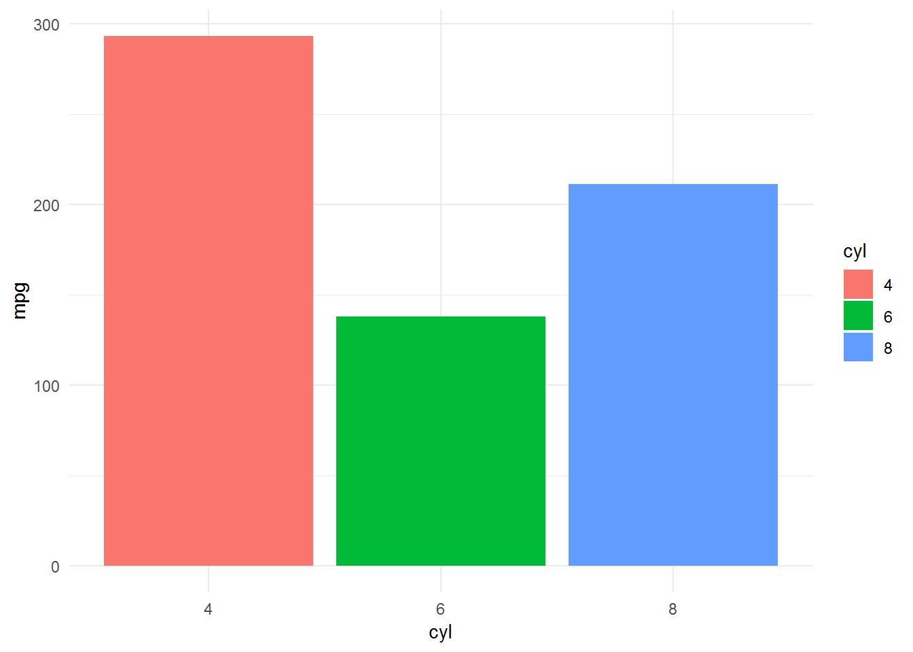

Chương 5 Lập trình hàm
Khi phân tích dữ liệu, một kỹ năng nâng cao giúp tăng năng suất phân tích là kỹ năng viết hàm. Về lý thuyết, bất cứ đoạn code nào cũng có thể chuyển thành hàm. Một hàm viết tốt phải đảm bảo 3 yếu tố chính:
- Linh động: Có thể sử dụng trong nhiều tập dữ liệu khác nhau
- Ngắn gọn: Chỉ giải quyết 1 vấn đề cụ thể, không nên cho quá nhiều vấn đề trong một hàm.
- Mở rộng: Có thể mở rộng khi tăng số biến và giải quyết được vấn đề tổng quát
Việc viết hàm là cả một nghệ thuật và đòi hỏi có sự hiểu biết sâu sắc về R. Tuy nhiên, khi đứng dưới góc độ ứng dụng, ta có thể viết hàm một cách nhanh chóng dựa trên khái niệm về NSE (Non Standard Evaluation).
df <- data.frame(x = 1:3, y = 3:1)
filter(df, x == 3)## x y
## 1 3 1Tuy nhiên, câu lệnh sau sẽ không hoạt động
# Cách 1: Không hoạt động
my_var <- x## Error in eval(expr, envir, enclos): object 'x' not founddf %>% filter(my_var == 1)## Error in filter_impl(.data, quo): Evaluation error: object 'my_var' not found.# Cách 2: Không hoạt động
my_var <- "x"
df %>% filter(my_var == 1)## [1] x y
## <0 rows> (or 0-length row.names)5.1 Quotes vs. Unquotes
- Quotes là cách thức biến chỉ được lưu dưới dạng string mà chưa đề cập đến giá trị mà biến đó chứa.
- Unquote là việc tính toán giá trị mà biến thực sự lưu trữ.
Ví dụ, x <- 5 thì "x" là quote vì chỉ lưu tên của biến dưới dạng string. x = 5 là unquote vì đã tính đến giá trị thực sự mà x lưu trữ là 5.
Xem thêm ví dụ sau:
greet <- function(name){
print("Hello, name!")
}
greet("duc anh")## [1] "Hello, name!"Hàm trên không hoạt động như chúng ta mong muốn vì name đang được quotes và chỉ lưu trữ dưới dạng string.
greet <- function(name){
glue::glue("Hello, {name}!")
}
greet("duc anh")## Hello, duc anh!Ở hàm thứ hai, name được tính toán đến giá trị thực sự mà biến này đang lưu trữ (giá trị duc anh).
Để quotes, ta dùng hàm quo(). Kết quả của quo() là quosure, một dạng của biểu thức (formula).
quo(x)## <quosure>
## expr: ^x
## env: globalquo(a + b + c)## <quosure>
## expr: ^a + b + c
## env: globalquo("group_var")## <quosure>
## expr: ^"group_var"
## env: emptyĐể sử dụng quosure trong hàm, ta sử dụng enquo. Sự khác biệt giữa quo và enquo có thể phân cấp như sau:
quo: Tạoquosurevới biếnenquo: Tạoquosurevới giá trị của biến.
x <- 5
# Ví dụ 1
quo(x) ## <quosure>
## expr: ^x
## env: globalenquo(x)## <quosure>
## expr: ^5
## env: empty# Ví dụ 2
quo(x + 2)## <quosure>
## expr: ^x + 2
## env: globalĐể unquote, ta dùng hàm !! để tính các giá trị mà biến đang lưu trữ.
my_summarise <- function(df, group_var) {
group_var <- quo(group_var)
print(group_var)
df %>%
group_by(!! group_var) %>%
summarise(mean = mean(mpg))
}
my_summarise(mtcars, cyl)## <quosure>
## expr: ^group_var
## env: 0000000007E9A490## Error in grouped_df_impl(data, unname(vars), drop): Column `group_var` is unknownCâu lệnh trên không thực hiện được vì quo(group_var) sẽ trả ra kết quả là ^group_var, giá trị này không tồn tại. Cái chúng ta cần là biểu thức (expression) dạng ^cyl. Lúc này, ta phải dùng enquo
my_summarise <- function(df, group_var) {
group_var <- enquo(group_var)
print(group_var)
df %>%
group_by(!! group_var) %>%
summarise(mean = mean(mpg))
}
my_summarise(mtcars, cyl)## <quosure>
## expr: ^cyl
## env: global## # A tibble: 3 x 2
## cyl mean
## <dbl> <dbl>
## 1 4 26.7
## 2 6 19.7
## 3 8 15.1my_var <- quo(mpg)
mtcars %>% summarise(mean = mean(!!my_var))## mean
## 1 20.09062Ta cũng có thể sử dụng quo, enquo với một nhóm các biểu thức như sau
exp <- quo(summarise(
mtcars, mean(mpg)
))
exp## <quosure>
## expr: ^summarise(mtcars, mean(mpg))
## env: global5.2 Trường hợp dùng quo_name
quo_name cho phép convert biểu thức thành dạng string.
x <- 5
quo(x)## <quosure>
## expr: ^x
## env: globalquo(x) %>% quo_name()## [1] "x"enquo(x)## <quosure>
## expr: ^5
## env: emptyenquo(x) %>% quo_name## [1] "5"Lưu ý:
- Khi tạo các biến mới hoặc sử dụng dấu gán trong hàm khi lập trình, cần dùng dấu
:= - Giá trị được gán (bên trái dấu gán) phải có
!!
- Ví dụ khi sử dụng với rename
my_rename <- function(data, var){
var <- enquo(var)
new_var <- paste0("new_", quo_name(var))
data <- data %>%
rename(!!new_var := !!var)
return(data)
}
my_rename(mtcars, mpg) %>% head## new_mpg cyl disp hp drat wt qsec vs am gear carb
## Mazda RX4 21.0 6 160 110 3.90 2.620 16.46 0 1 4 4
## Mazda RX4 Wag 21.0 6 160 110 3.90 2.875 17.02 0 1 4 4
## Datsun 710 22.8 4 108 93 3.85 2.320 18.61 1 1 4 1
## Hornet 4 Drive 21.4 6 258 110 3.08 3.215 19.44 1 0 3 1
## Hornet Sportabout 18.7 8 360 175 3.15 3.440 17.02 0 0 3 2
## Valiant 18.1 6 225 105 2.76 3.460 20.22 1 0 3 1- Khi sử dụng với
mutate
my_mutate <- function(data, var){
var <- enquo(var)
data <- data %>%
mutate(!!"new_var" := !!var*2)
return(data)
}
mtcars %>%
select(mpg) %>%
my_mutate(mpg) %>% head## mpg new_var
## 1 21.0 42.0
## 2 21.0 42.0
## 3 22.8 45.6
## 4 21.4 42.8
## 5 18.7 37.4
## 6 18.1 36.25.3 Trường họp nhiều biến
- Khi có nhiều biến, ta dùng
quos(...)&!!!thay choenquovà!!
my_summarise <- function(df, value_var,...){
group_var <- quos(...)
value_var <- enquo(value_var)
df %>% group_by(!!!group_var) %>%
summarise(mean = mean(!!value_var))
}
my_summarise(mtcars, mpg, cyl, vs)## # A tibble: 5 x 3
## # Groups: cyl [?]
## cyl vs mean
## <dbl> <dbl> <dbl>
## 1 4 0 26
## 2 4 1 26.7
## 3 6 0 20.6
## 4 6 1 19.1
## 5 8 0 15.1Lưu ý: Trong thực tế, khi không muốn viết hàm mà vẫn có thể sử dụng ứng dụng của toán tử !, ta có thể sử dụng toán tử !!! nhu sau.
my_var <- c("mpg", "cyl")
mtcars %>% select(!!!my_var) %>% head## mpg cyl
## Mazda RX4 21.0 6
## Mazda RX4 Wag 21.0 6
## Datsun 710 22.8 4
## Hornet 4 Drive 21.4 6
## Hornet Sportabout 18.7 8
## Valiant 18.1 65.4 Ứng dụng
5.4.1 Hàm tính toán tổng hợp nhiều biến
analytics_summarise <- function(data, value_var,...){
group_var <- quos(...)
value_var <- enquo(value_var)
data %>%
group_by(!!!group_var) %>%
summarise(n = n(),
total = sum(!!value_var),
min = min(!!value_var),
q25 = quantile(!!value_var, 0.25, na.rm = T),
q50 = quantile(!!value_var, 0.50, na.rm = T),
q75 = quantile(!!value_var, 0.75, na.rm = T),
q90 = quantile(!!value_var, 0.90, na.rm = T),
q95 = quantile(!!value_var, 0.95, na.rm = T),
max = max(!!value_var),
mean = mean(!!value_var, na.rm = T),
mean_trimed = mean(!!value_var, trim = 0.1, na.rm = T)) %>%
ungroup -> result
return(result)
}
# Một biến
mtcars %>%
analytics_summarise(mpg, cyl)## # A tibble: 3 x 12
## cyl n total min q25 q50 q75 q90 q95 max mean
## <dbl> <int> <dbl> <dbl> <dbl> <dbl> <dbl> <dbl> <dbl> <dbl> <dbl>
## 1 4 11 293. 21.4 22.8 26 30.4 32.4 33.2 33.9 26.7
## 2 6 7 138. 17.8 18.6 19.7 21 21.2 21.3 21.4 19.7
## 3 8 14 211. 10.4 14.4 15.2 16.2 18.3 18.9 19.2 15.1
## # ... with 1 more variable: mean_trimed <dbl># Nhiều biến
mtcars %>%
analytics_summarise(mpg, cyl, am)## # A tibble: 6 x 13
## cyl am n total min q25 q50 q75 q90 q95 max mean
## <dbl> <dbl> <int> <dbl> <dbl> <dbl> <dbl> <dbl> <dbl> <dbl> <dbl> <dbl>
## 1 4 0 3 68.7 21.5 22.2 22.8 23.6 24.1 24.2 24.4 22.9
## 2 4 1 8 225. 21.4 25.2 28.8 30.9 32.8 33.4 33.9 28.1
## 3 6 0 4 76.5 17.8 18.0 18.6 19.8 20.7 21.1 21.4 19.1
## 4 6 1 3 61.7 19.7 20.4 21 21 21 21 21 20.6
## 5 8 0 12 181. 10.4 14.0 15.2 16.6 18.6 18.9 19.2 15.0
## 6 8 1 2 30.8 15 15.2 15.4 15.6 15.7 15.8 15.8 15.4
## # ... with 1 more variable: mean_trimed <dbl>5.4.2 Vẽ đồ thị với ggplot2
Tương tự với dplyr, lập trình NSE có thể sử dụng đơn giản với ggplot2.
my_chart <- function(data, value_var, group_var){
value_var <- enquo(value_var)
group_var <- enquo(group_var)
data %>%
ggplot(aes(!!group_var, !!value_var)) +
geom_bar(stat = "identity",
aes(fill = !!group_var)) +
theme_minimal()
}
mtcars %>%
mutate(cyl = as.factor(cyl)) %>%
group_by(cyl) %>%
summarise(mpg = sum(mpg)) %>%
my_chart(mpg, cyl)